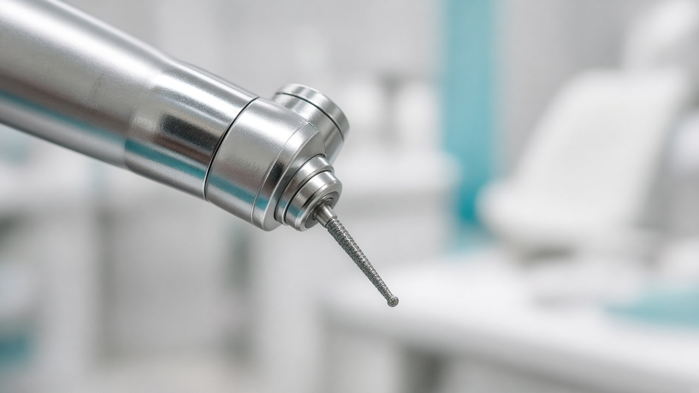
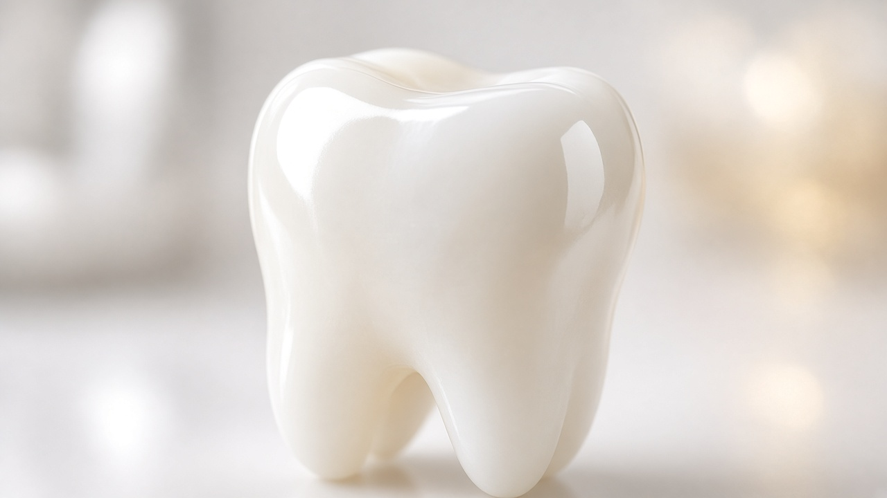
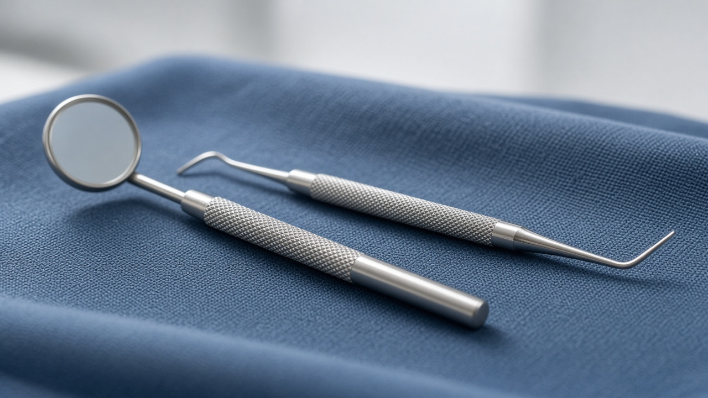

Op het prachtige Griekse eiland Kos vind je veel tandartsen. Door de jaren heen zijn er diverse tandartspraktijken ontstaan met uiteenlopende specialisaties, met moderne en minder moderne faciliteiten. Het aanbod is breed. Wij van Hello Kos begrijpen dat u tijdens uw vakantie alleen in geval van nood naar de tandarts wilt. Daarom hebben we een zorgvuldige selectie gemaakt van twee tandartsen die voldoen aan hoge kwaliteitsnormen, vergelijkbaar met West-Europese standaarden.

Tandarts
Kies een van de twee tandartsen.

Moderne zorg, vertrouwde kwaliteit
De meeste praktijken op Kos zijn uitstekend uitgerust, werken met de nieuwste technieken en zijn gewend aan het behandelen van buitenlandse patiënten. Engels spreken is meestal geen probleem. Wij hebben twee tandartsen geselecteerd waarvan we het werk en de werkwijze goed kennen, en waarvan de kwaliteit vergelijkbaar is met West-Europese standaarden, zodat u zich geen zorgen hoeft te maken dat men hier “nog met een steen en beitel werkt”.

Voor elke situatie
Het is fijn om te weten dat u snel en professioneel geholpen kunt worden, zodat u zo snel mogelijk weer zorgeloos van uw vakantie kunt genieten. De eerste tandarts die wij aanbevelen, richt zich specifiek op esthetische tandheelkunde, zoals een afgebroken tand, spoed, en andere ernstige klachten als kiespijn. Onze tweede tandartskeuze is er als u last heeft van ontstekingen of acute problemen tijdens uw vakantie.
